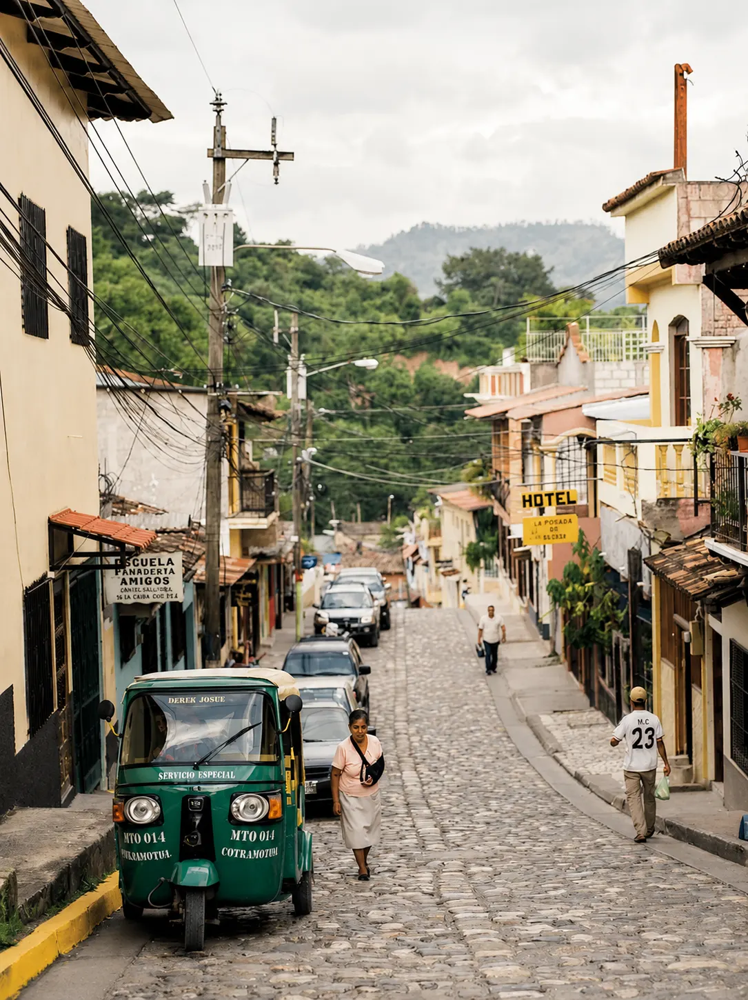
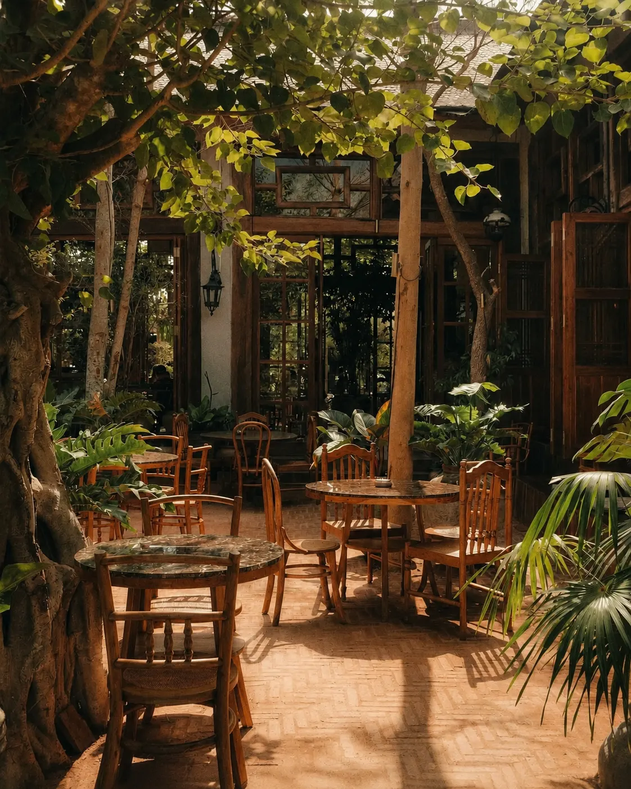
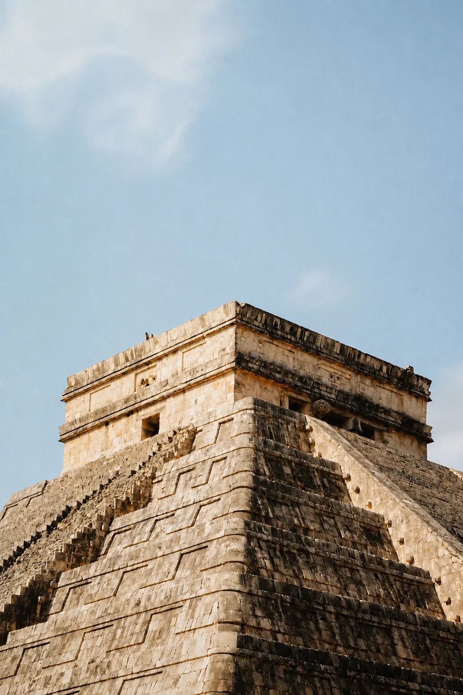
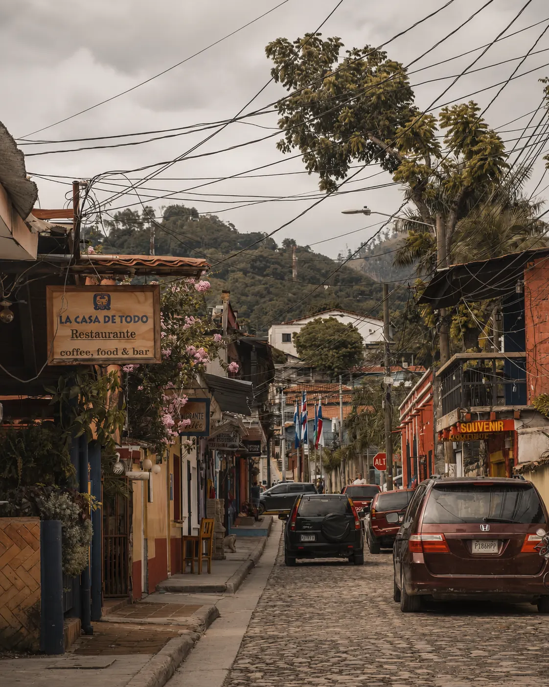
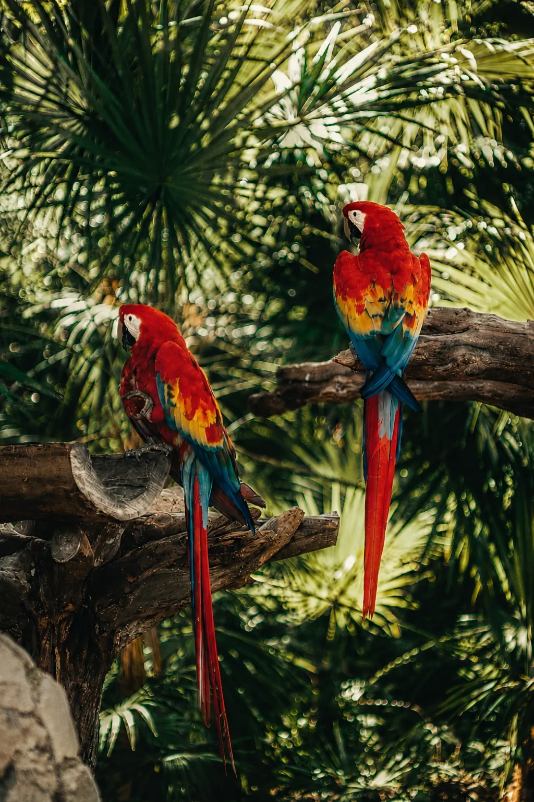
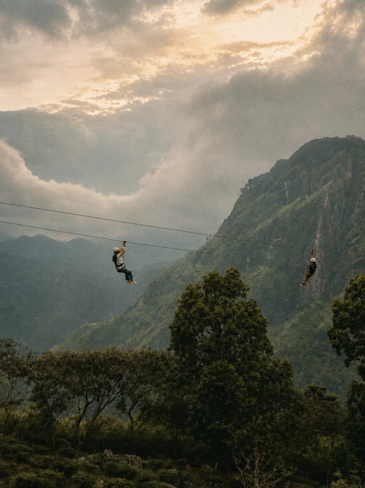

Explore and Enjoy
Copán Ruinas is one of Honduras' most charming destinations, known for its cobblestone streets, local cafés, mountain views, and its incredible Maya heritage. While you're in town, we hope you take some time to explore, enjoy the slower pace, and experience a little bit of what makes Copán so special.
I. Restaurants & Cafes to Try

Café San Rafael
A favorite spot for coffee, cheese, bistro-style food, and a relaxed afternoon in town.
Open in Google MapsHacienda San Lucas
A beautiful option for a special meal with a more scenic, destination feel.
Open in Google MapsGlifos Restaurant — Hotel Marina Copán
A classic option located inside Hotel Marina Copán, offering regional and international dishes.
Open in Google MapsBalam Bistro & Bak'tun Lounge — Ancestral Copán
A great option for guests staying at or visiting Ancestral Copán, with locally inspired food and cocktails.
Visit on MapsII. Things to Do in Copán

Visit the Copán Ruinas
A UNESCO World Heritage Site and one of the most important Maya sites in the region. A must-see while you're here! Open in Google Maps.
Open in Google Maps
Walk Around Copán Ruinas or Ride a Tuktuk!
The town is charming, walkable, and full of cobblestone streets, cafés, local shops, and beautiful corners to explore.
Open in Google Maps
Visit the Macaw Mountain
A beautiful bird park and nature reserve, home to Honduras' national bird, the Scarlet Macaw. Open in Google Maps.
Open in Google Maps
Ziplining / Canopy Tour
For guests looking for a little adventure, Copán also offers a canopy / ziplining experience through the surrounding mountains. Open in Google Maps.
Open in Google Maps